Color Emotion Association
Psychology, User Research, Programming
Abstract: The main objective of this paper is to study the dynamics between colour and the emotional state of a person and its further implementation in the field of interaction media.
Research has already been done in the field of colour theory and its impact on human emotions, however, all studies have focussed on to identify specific colours which were linked to a particular emotion or a set of emotions.
But, emotions, in general cannot be classified into discrete classifications. They are gradual and quantified. So, it is necessary for the colour scale to be continuous gradient which could reflect the intensity of the emotion and its type.
Furthermore, the project also discusses the various applications of such a calibrated colour scale in interaction media and how it can be effectively used to improve its usability.
Abstract on Britich Council of Undergraduate Research Website
Link to the Presentation Video
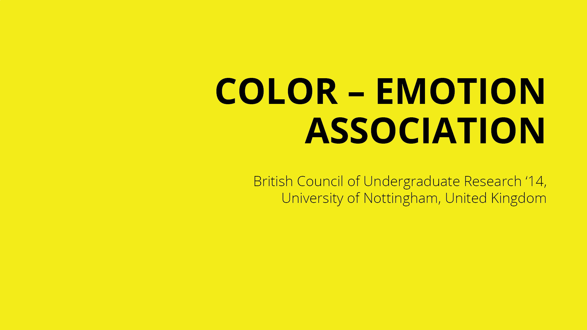
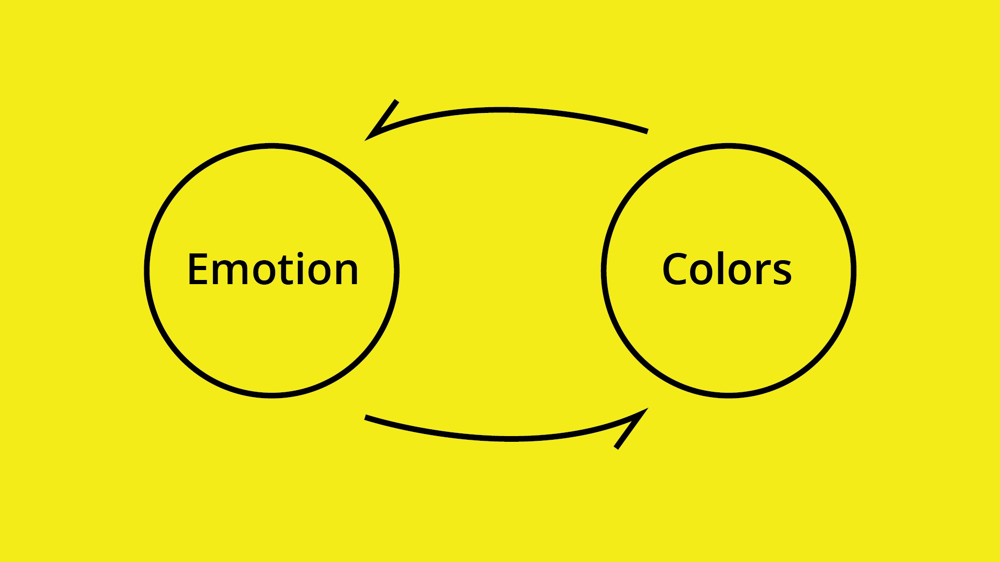
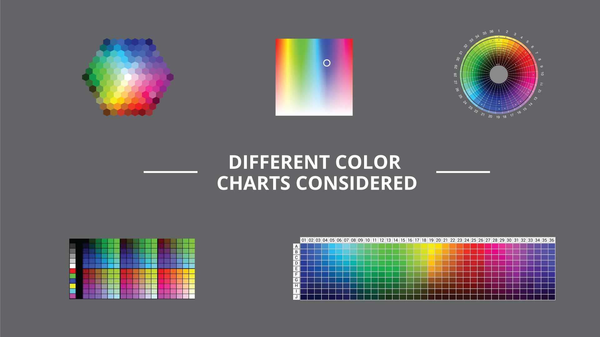
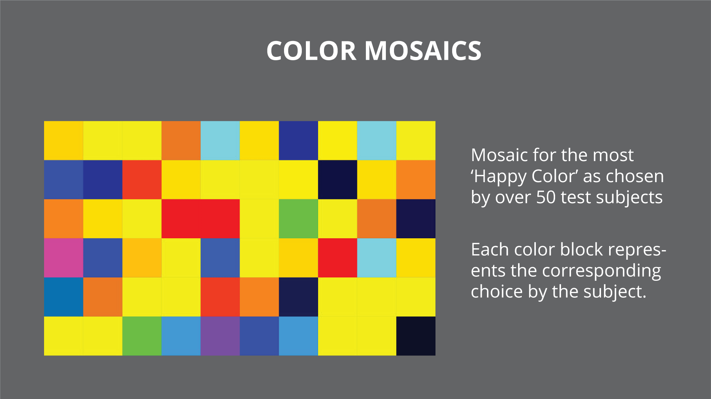
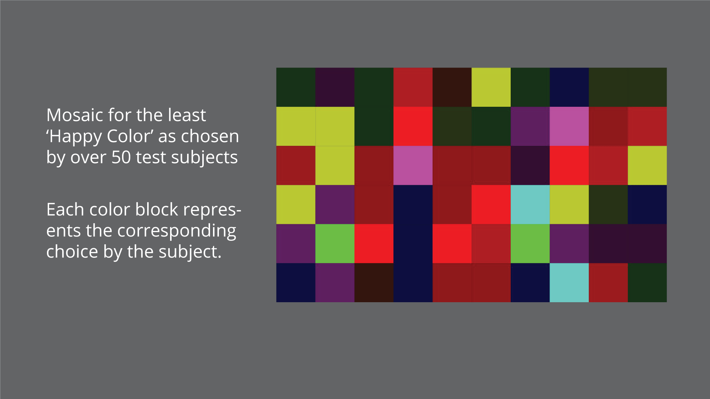
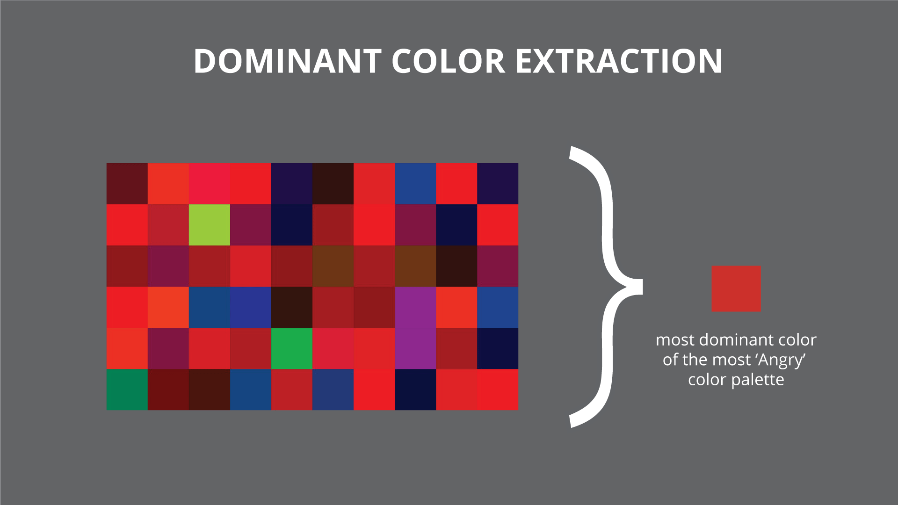
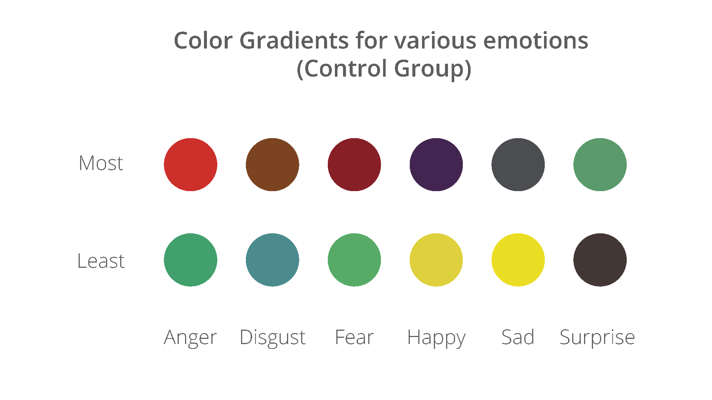
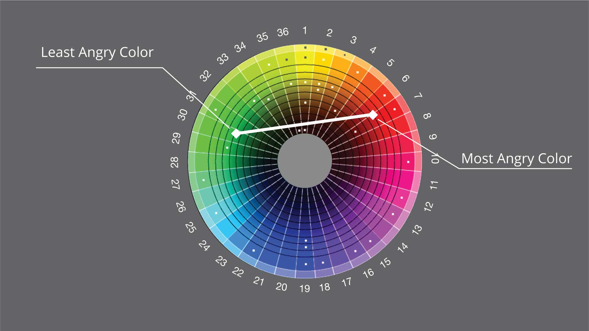
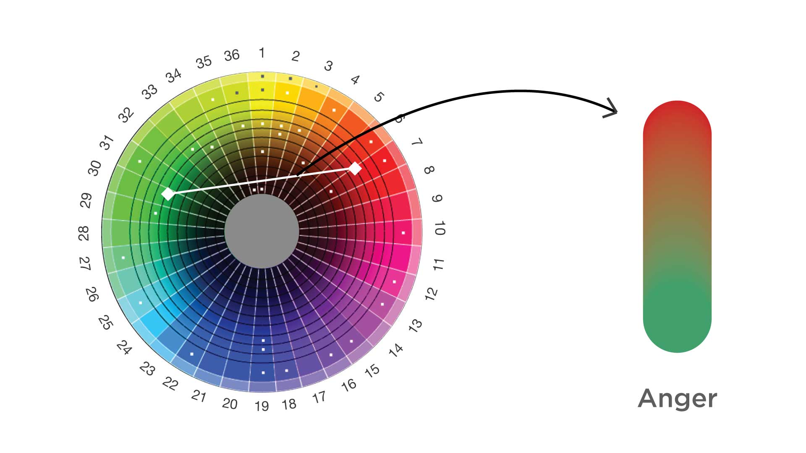
>
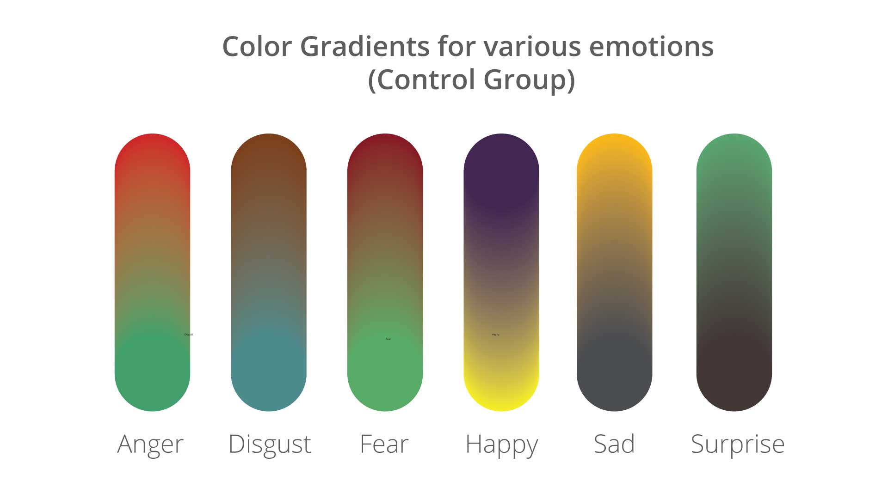
>
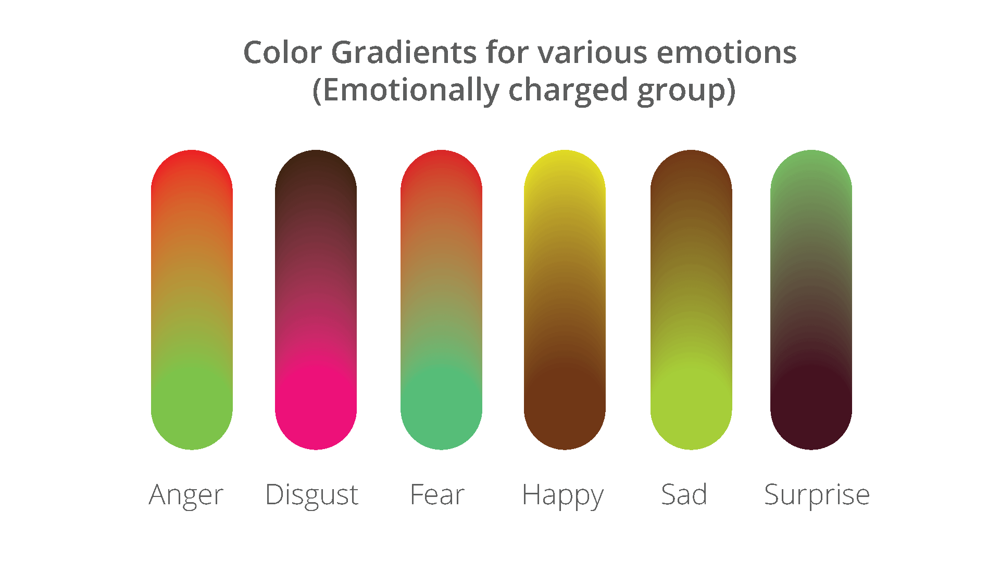
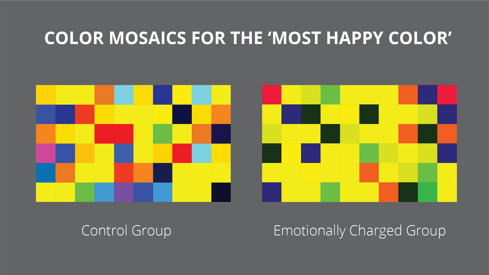